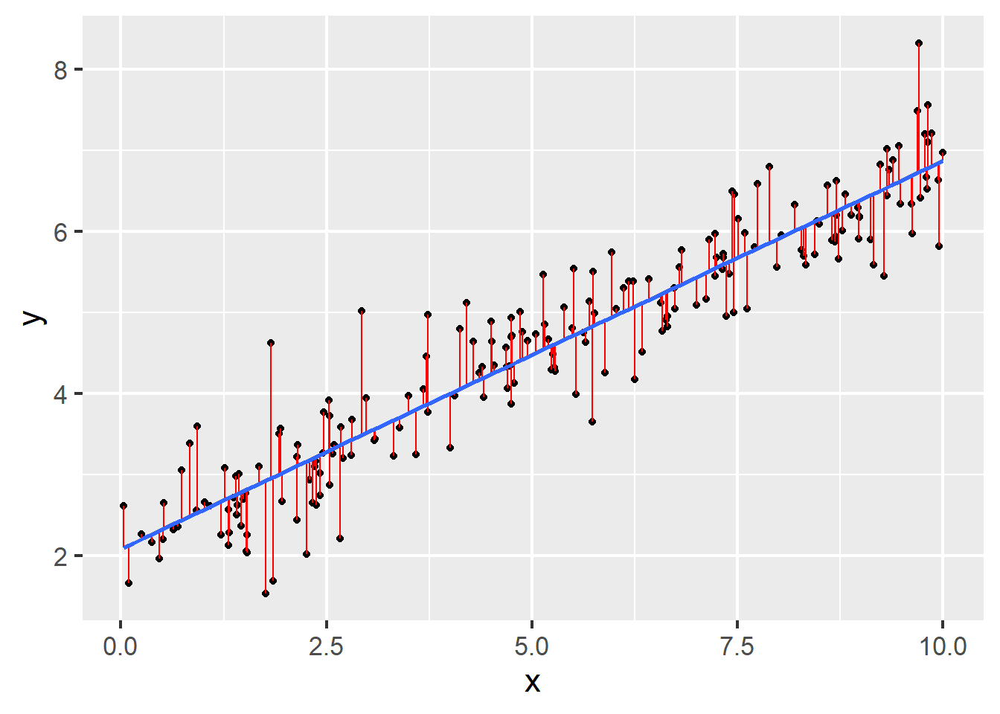

optimg(data = data, par = c(0,0), fn=SSE, method = "STGD")$par
[1] 3.37930046 0.06683237
$value
[1] 959.4293
$counts
[1] 6
$convergence
[1] 0Not graded, just practice
Katie Schuler
October 26, 2023
Questions 6-9 refer to the code and output below, performing gradient descent with optimg:
$par
[1] 3.37930046 0.06683237
$value
[1] 959.4293
$counts
[1] 6
$convergence
[1] 0How many steps did the gradient descent algorithm take?
What was the sum of squared error of the optimal paramters?
What coefficients does the algorithm converge on?
Questions 10-12 refer to the output below from lm():
Call:
lm(formula = y ~ x, data = data)
Coefficients:
(Intercept) x
3.37822 0.06688 Given the model is specified by the equation \(y = w_0+w_1x_1\), what is the parameter estimate for \(w_0\) = and \(w_1\) = .
True or false, for this model, optimg() with gradient descent would converge on the same parameter estimates?
Question 13 refers to the following figure:

Questions 19-20 refer to the following code and output:
Call:
lm(formula = y ~ 1 + x, data = data)
Residuals:
Min 1Q Median 3Q Max
-1.38959 -0.32626 -0.04605 0.31967 1.65977
Coefficients:
Estimate Std. Error t value Pr(>|t|)
(Intercept) 2.08280 0.07418 28.08 <2e-16 ***
x 0.47844 0.01242 38.51 <2e-16 ***
---
Signif. codes: 0 '***' 0.001 '**' 0.01 '*' 0.05 '.' 0.1 ' ' 1
Residual standard error: 0.5139 on 198 degrees of freedom
Multiple R-squared: 0.8822, Adjusted R-squared: 0.8816
F-statistic: 1483 on 1 and 198 DF, p-value: < 2.2e-16Questions 21-23 refer to the following code and output:
# we divide the data into v folds for cross-validation
set.seed(2)
splits <- vfold_cv(data)
# model secification
model_spec <-
linear_reg() %>%
set_engine(engine = "lm")
# add a workflow
our_workflow <-
workflow() %>%
add_model(model_spec) %>%
add_formula(y ~ x)
# fit models to our folds
fitted_models <-
fit_resamples(
object = our_workflow,
resamples = splits
)
fitted_models %>%
collect_metrics()# A tibble: 2 × 6
.metric .estimator mean n std_err .config
<chr> <chr> <dbl> <int> <dbl> <chr>
1 rmse standard 0.507 10 0.0397 Preprocessor1_Model1
2 rsq standard 0.890 10 0.0146 Preprocessor1_Model1Questions 24-26 refer to the following code and output:
# we bootstrap the data for cross-validation
set.seed(2)
bootstrap <- bootstraps(data)
# fit models to our folds
fitted_models_boot <-
fit_resamples(
object = our_workflow,
resamples = bootstrap
)
fitted_models_boot %>%
collect_metrics()# A tibble: 2 × 6
.metric .estimator mean n std_err .config
<chr> <chr> <dbl> <int> <dbl> <chr>
1 rmse standard 0.507 25 0.00946 Preprocessor1_Model1
2 rsq standard 0.887 25 0.00377 Preprocessor1_Model1